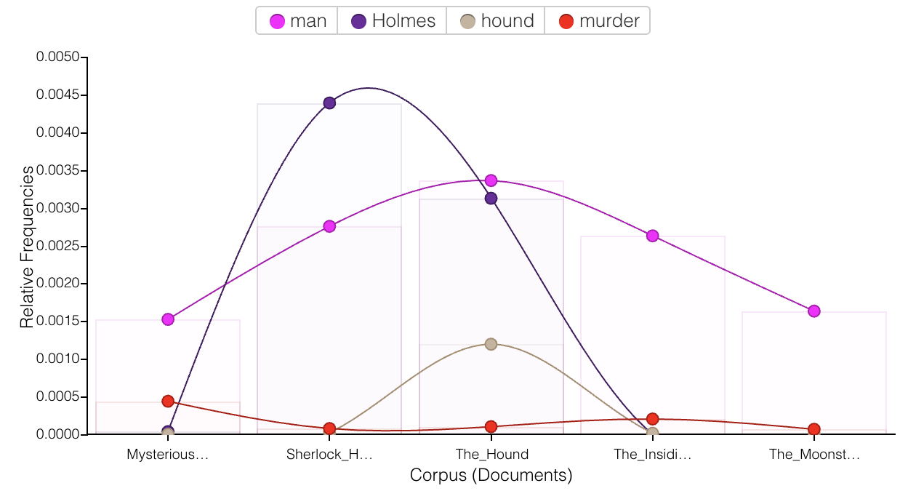

Project Overview
In this project, I explored the first two chapters of The Hound of the Baskervilles using XML markup and Voyant Tools. I encoded characters, objects, and concepts in the text to uncover hidden patterns, and used Voyant to analyze trends across a whole mystery corpus.
Voyant Visualizations
Voyant Word Cloud
This word cloud shows the most common terms across my mystery corpus. Larger words appeared more frequently in the text, which helped me identify important characters and objects early in the story.
Open this view in Voyant Tools
Word Frequency Over Time (Trends)
Sample Encoded XML
<quote>“I have in my pocket a <object>manuscript</object>,” said Dr. James <person>Mortimer</person>.</quote>
<person>Sherlock Holmes</person> was seated at the breakfast table. I picked up the <object>stick</object>.
Download My Marked-Up Text
Full Analysis
Want to read my full write-up of the project, including what I learned from both markup and Voyant? Jump to it here.
Full Text
Working with The Hound of the Baskervilles in XML format and analyzing it in Voyant has given me...